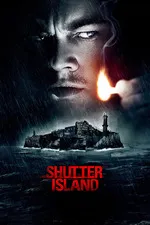

Shutter Island is a psychological thriller film released in 2010. It was directed by Martin Scorsese and stars Leonardo DiCaprio in the lead role. The story follows U.S. Marshal Teddy Daniels, who travels to a remote island to investigate the disappearance of a patient from a mental hospital. As he searches for the truth, he begins to experience strange events and disturbing visions. The movie explores themes of mental illness, trauma, guilt, and reality. It is known for its suspenseful atmosphere, unexpected twists, and powerful performances.